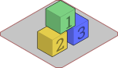
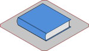
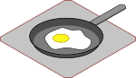
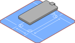
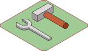

<div class="docs">
    <div class="grid">
        <div class="col-1-12">
            &nbsp;
        </div>
        <div class="col-10-12">
            <div class="docs-content">
                <h1 class="docs-title">{{ page.title }}</h1>
                <ul class="doc-items">
                    <li><a class="box-link" href="/docs/getting-started">
                        <div class="doc-item-info">
                            <h2>Getting Started</h2>
                            <p>初期インストールからフローのデプロイまでのすべて</p>
                        </div></a></li>

                    <li><a class="box-link" href="/docs/user-guide">
                        <div class="doc-item-info">
                            <h2>ユーザガイド</h2>
                            <p>Node-REDを利用するためのガイド</p>
                        </div></a></li>

                    <li><a class="box-link" href="https://cookbook.nodered.org">
                        <div class="doc-item-info">
                            <h2>クックブック</h2>
                            <p>Node-REDでできることのレシピ集</p>
                        </div></a></li>
                </ul>
                <ul class="doc-items">
                    <li><a class="box-link" href="/docs/creating-nodes/">
                        <div class="doc-item-info">
                            <h2>ノードの開発</h2>
                            <p>Node-REDのパレットを拡張するためのノードの開発手順</p>
                        </div></a></li>
                    <li><a class="box-link" href="/docs/developing">
                        <div class="doc-item-info">
                            <h2>コア機能の開発</h2>
                            <p>Node-REDのコア機能の開発手順</p>
                        </div></a></li>
                    <li><a class="box-link" href="/docs/api">
                        <div class="doc-item-info">
                            <h2>APIリファレンス</h2>
                            <p>Admin、RuntimeおよびStorage APIなど</p>
                        </div></a></li>
                </ul>
            </div>
        </div>
    </div>
</div>
